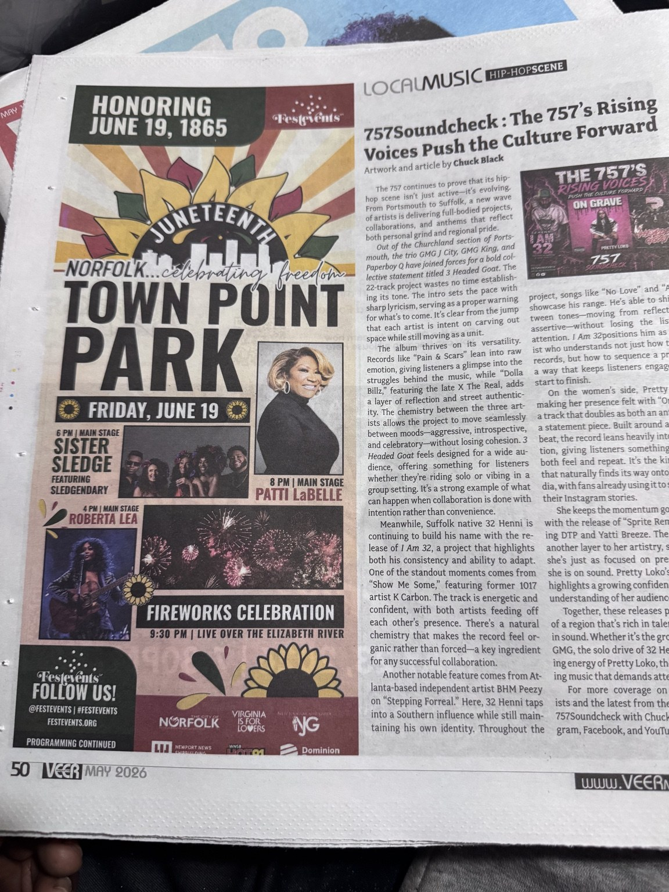

The 757’s Rising Voices Push the Culture Forward
A spotlight on collaborative rap from GMG, 32 Henni’s project and Pretty Loko’s music and visuals.

Read the Full Article
The 757 continues to prove that its hip-hop scene isn’t just active—it’s evolving. From Portsmouth to Suffolk, a new wave of artists is delivering full-bodied projects, collaborations, and anthems that reflect both personal grind and regional pride.
Out of the Churchland section of Portsmouth, the trio GMG J City, GMG King, and Paperboy Q have joined forces for a bold collective statement titled 3 Headed Goat. The 22-track project wastes no time establishing its tone. The intro sets the pace with sharp lyricism, serving as a proper warning for what’s to come. It’s clear from the jump that each artist is intent on carving out space while still moving as a unit.
The album thrives on its versatility. Records like “Pain & Scars” lean into raw emotion, giving listeners a glimpse into the struggles behind the music, while “Dolla Billz,” featuring the late X The Real, adds a layer of reflection and street authenticity. The chemistry between the three artists allows the project to move seamlessly between moods—aggressive, introspective, and celebratory—without losing cohesion. 3 Headed Goat feels designed for a wide audience, offering something for listeners whether they’re riding solo or vibing in a group setting. It’s a strong example of what can happen when collaboration is done with intention rather than convenience.
Meanwhile, Suffolk native 32 Henni is continuing to build his name with the release of I Am 32, a project that highlights both his consistency and ability to adapt. One of the standout moments comes from “Show Me Some,” featuring former 1017 artist K Carbon. The track is energetic and confident, with both artists feeding off each other’s presence. There’s a natural chemistry that makes the record feel organic rather than forced—a key ingredient for any successful collaboration.
Another notable feature comes from Atlanta-based independent artist BHM Peezy on “Stepping Forreal.” Here, 32 Henni taps into a Southern influence while still maintaining his own identity. Throughout the project, songs like “No Love” and “Again” showcase his range. He’s able to shift between tones—moving from reflective to assertive—without losing the listener’s attention. I Am 32 positions him as an artist who understands not just how to make records, but how to sequence a project in a way that keeps listeners engaged from start to finish.
On the women’s side, Pretty Loko is making her presence felt with “On Grave,” a track that doubles as both an anthem and a statement piece. Built around a hypnotic beat, the record leans heavily into affirmation, giving listeners something they can both feel and repeat. It’s the kind of song that naturally finds its way onto social media, with fans already using it to soundtrack their Instagram stories.
She keeps the momentum going visually with the release of “Sprite Remix,” featuring DTP and Yatti Breeze. The visual adds another layer to her artistry, showing that she’s just as focused on presentation as she is on sound. Pretty Loko’s current run highlights a growing confidence and a clear understanding of her audience.
Together, these releases paint a picture of a region that’s rich in talent and diverse in sound. Whether it’s the group dynamic of GMG, the solo drive of 32 Henni, or the rising energy of Pretty Loko, the 757 is delivering music that demands attention.
For more coverage on emerging artists and the latest from the culture, follow 757Soundcheck with Chuck Black on Instagram, Facebook, and YouTube.
As Published in VEER Magazine
Photograph of the original printed article, including the byline and magazine layout.
